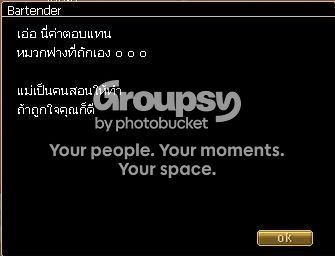
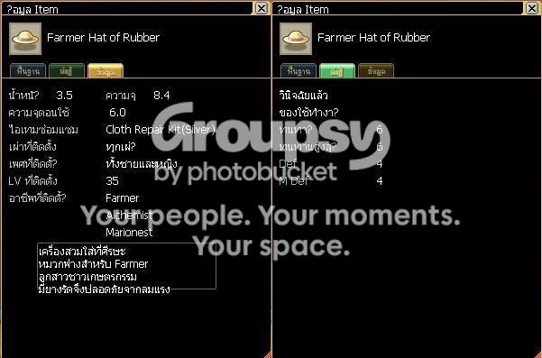

อยากทราบเรื่องการฝึกมังกรและล้มมังกรค่ะ
ว่าฝึกและล้มมากๆๆมันจะวิ่งไวไหมค่ะ
ขอบคุณค่ะ
คำถามปลีกย่อยขอให้มาตั้งในกระทู้นี้คะ ตอบวันต่อวันคะ
 โดย ECO » พฤหัสฯ. 04 ต.ค. 2007 8:18 am
โดย ECO » พฤหัสฯ. 04 ต.ค. 2007 8:18 am
sealwater เขียน:ผมอยากได้หมวกชาวนาเลเวล 35 ที่เป็นหมวกฟางใบใหญ่ๆ น่ะครับเห็นว่าต้องไปทำเควสที่เมืองใต้ ใครรู้รายละเอียดรบกวนด้วยนะครับ
8) วิธีทำเควส ตามนี้เลยครับผม 8)
[GM]เป๊ปเป้ เขียน: :oops: เควส Event รองเท้า Lv.55 สำหรับอาชีพ Farmer
เริ่มเควส Event นี้โดยการคุยกับ NPC : Bartender ที่อยู่ในร้านเหล้า
เมือง Iron City Upstairs ค่ะ (ดังภาพ)
:arrow: เราจะได้รับ Item : Order(Event) มา 1 ชิ้นค่ะ
เค้าจะให้เราทำอาหารมาส่งตาม Order ค่ะ
:arrow: นำตัวอย่าง Order บางส่วนมาให้ชมค่ะ
:oops: Order ออกจะเยอะไปสักนิด แต่เป็นกำลังใจให้ Farmer ทุกท่าน สู้ๆ นะคะ :oops:


[GM]เป๊ปเป้ เขียน: :arrow: จากข้อมูลของทาง Wiki เมื่อเคลียร์เควสนี้เรียบร้อยแล้ว
ตัวละครผู้ชาย จะได้รับรองเท้า Lv.55
ตัวละครผู้หญิง จะได้รับหมวก Lv.35
[GM]เป๊ปเป้ เขียน:ขอบคุณ คุณ aries_tae มั่กๆ ค่ะ
:oops: ได้ทำการทดสอบแล้ว ตามข้อมูลที่ คุณ aries_tae ได้แจ้งมา
ปรากฏว่า สามารถทำได้จริงค่ะ
:arrow: โดยการใช้
>> Cherry Juice แทน Aplicot juice
>> Raspberry Juice แทน Grape juice
>> Cherry Jam แทน Orange jam
>> Grape Jam แทน Plam jam
:arrow: ในส่วนของชื่อ Item ที่ไม่ตรงกันนั้น
ทางทีมงานจะส่งข้อมูลนี้ให้กับทางผู้พัฒนาเกมส์ Eco
ดำเนินการแก้ไขให้คำพูดของ NPC : Bartender
ตรงกับ Item ที่ NPC ต้องการให้ถูกต้องต่อไปค่ะ



- ECO
- Dark Warrior

- โพสต์: 276285
- ลงทะเบียนเมื่อ: พุธ 26 ต.ค. 2011 9:31 pm
Re: อยากรู้หน่อยนึง
 โดย ECO » พฤหัสฯ. 04 ต.ค. 2007 1:37 pm
โดย ECO » พฤหัสฯ. 04 ต.ค. 2007 1:37 pm
:tarng101 เขียน:คือว่าอยากจาซือ้มังกรเติมแคลชอ่ะครับ แต่มันเขียนไอเทมเทศกาลนี่คือถ้าหมดเทศกาลจะหายไปหรือซือ้ได้เฉพาะเทศกาลอ่ะครับยังไม่เกทอ่ะ
ซื้อได้ในเฉพาะช่วงนี้ แล้วจะไม่มีให้ขาย สามารถใช้ได้ตลอดไปจ้า :oops:
- ECO
- Dark Warrior
- โพสต์: 276285
- ลงทะเบียนเมื่อ: พุธ 26 ต.ค. 2011 9:31 pm
 โดย ECO » พฤหัสฯ. 04 ต.ค. 2007 9:10 pm
โดย ECO » พฤหัสฯ. 04 ต.ค. 2007 9:10 pm
UnForGiveN เขียน:sealwater เขียน:ผมอยากได้หมวกชาวนาเลเวล 35 ที่เป็นหมวกฟางใบใหญ่ๆ น่ะครับเห็นว่าต้องไปทำเควสที่เมืองใต้ ใครรู้รายละเอียดรบกวนด้วยนะครับ
8) วิธีทำเควส ตามนี้เลยครับผม 8)[GM]เป๊ปเป้ เขียน: :oops: เควส Event รองเท้า Lv.55 สำหรับอาชีพ Farmer
เริ่มเควส Event นี้โดยการคุยกับ NPC : Bartender ที่อยู่ในร้านเหล้า
เมือง Iron City Upstairs ค่ะ (ดังภาพ)
:arrow: เราจะได้รับ Item : Order(Event) มา 1 ชิ้นค่ะ
เค้าจะให้เราทำอาหารมาส่งตาม Order ค่ะ
:arrow: นำตัวอย่าง Order บางส่วนมาให้ชมค่ะ
:oops: Order ออกจะเยอะไปสักนิด แต่เป็นกำลังใจให้ Farmer ทุกท่าน สู้ๆ นะคะ :oops:[GM]เป๊ปเป้ เขียน: :arrow: จากข้อมูลของทาง Wiki เมื่อเคลียร์เควสนี้เรียบร้อยแล้ว
ตัวละครผู้ชาย จะได้รับรองเท้า Lv.55
ตัวละครผู้หญิง จะได้รับหมวก Lv.35[GM]เป๊ปเป้ เขียน:ขอบคุณ คุณ aries_tae มั่กๆ ค่ะ
:oops: ได้ทำการทดสอบแล้ว ตามข้อมูลที่ คุณ aries_tae ได้แจ้งมา
ปรากฏว่า สามารถทำได้จริงค่ะ
:arrow: โดยการใช้
>> Cherry Juice แทน Aplicot juice
>> Raspberry Juice แทน Grape juice
>> Cherry Jam แทน Orange jam
>> Grape Jam แทน Plam jam
:arrow: ในส่วนของชื่อ Item ที่ไม่ตรงกันนั้น
ทางทีมงานจะส่งข้อมูลนี้ให้กับทางผู้พัฒนาเกมส์ Eco
ดำเนินการแก้ไขให้คำพูดของ NPC : Bartender
ตรงกับ Item ที่ NPC ต้องการให้ถูกต้องต่อไปค่ะ
มันมีเงื่อนไขอะไรก่อนทำบ้างไหม๊ครับ วันนนี้เอา อาเคมิท เวล 41 ไปแล้วก้อไม่เหงมีออเดอร์ขึ้นมาให้เลยครับ
- ECO
- Dark Warrior
- โพสต์: 276285
- ลงทะเบียนเมื่อ: พุธ 26 ต.ค. 2011 9:31 pm
 โดย ECO » พฤหัสฯ. 04 ต.ค. 2007 10:28 pm
โดย ECO » พฤหัสฯ. 04 ต.ค. 2007 10:28 pm
NewLegend เขียน:ขอถามนะคับหิน holy silver ที่ใช้ทำเทียร่านี่หาจากไหนหรอคับ :?:
Tear of saint + Silver Stone (มั้ง)
พอผสมเป็น Holy Silver แล้ว มันจะกด ดูส่วนประกอบไม่ได้ (Bug)
ไม่ก็เปิดกล่องเบอร์6 ค่ะ 1000กล่องจะได้ซัก1อันมั้ง
/me Hayate no Gotoku ฟิ้วววววว~~~~**
- ECO
- Dark Warrior
- โพสต์: 276285
- ลงทะเบียนเมื่อ: พุธ 26 ต.ค. 2011 9:31 pm
 โดย ECO » พฤหัสฯ. 04 ต.ค. 2007 10:31 pm
โดย ECO » พฤหัสฯ. 04 ต.ค. 2007 10:31 pm
แล้ว Tear of saint นี่หาจากไหนอ่ะคับ :?: แล้วราคาในตลาดตอนนี้อยู่ที่เท่าไหร่(เผื่อผมไม่มีปัญญาหาเอง)Miruku เขียน:NewLegend เขียน:ขอถามนะคับหิน holy silver ที่ใช้ทำเทียร่านี่หาจากไหนหรอคับ :?:
Tear of saint + Silver Stone (มั้ง)
พอผสมเป็น Holy Silver แล้ว มันจะกด ดูส่วนประกอบไม่ได้ (Bug)
ไม่ก็เปิดกล่องเบอร์6 ค่ะ 1000กล่องจะได้ซัก1อันมั้ง
/me Hayate no Gotoku ฟิ้วววววว~~~~**
- ECO
- Dark Warrior
- โพสต์: 276285
- ลงทะเบียนเมื่อ: พุธ 26 ต.ค. 2011 9:31 pm
 โดย ECO » ศุกร์ 05 ต.ค. 2007 1:17 am
โดย ECO » ศุกร์ 05 ต.ค. 2007 1:17 am
NewLegend เขียน:แล้ว Tear of saint นี่หาจากไหนอ่ะคับ :?: แล้วราคาในตลาดตอนนี้อยู่ที่เท่าไหร่(เผื่อผมไม่มีปัญญาหาเอง)Miruku เขียน:NewLegend เขียน:ขอถามนะคับหิน holy silver ที่ใช้ทำเทียร่านี่หาจากไหนหรอคับ :?:
Tear of saint + Silver Stone (มั้ง)
พอผสมเป็น Holy Silver แล้ว มันจะกด ดูส่วนประกอบไม่ได้ (Bug)
ไม่ก็เปิดกล่องเบอร์6 ค่ะ 1000กล่องจะได้ซัก1อันมั้ง
/me Hayate no Gotoku ฟิ้วววววว~~~~**
Tear of Saint หาจากมอนส์ชื่อ Immortal Dominion (พญามาร 4 ปึก ชุดขาวดำ)
ซึ่งหาได้ไม่ยากใน South Dungeon B3F (ดันใต้ชั้น 3)
และ่น้ำตานักบุญหล่นยาก ... แต่ก็จัดได้ว่าเป็นแรร์ที่ถ้าตั้งใจหาจริงๆ จังๆ ก็หาเองได้ ถ้ายอมเสียเวลาล่าสัก 1 วันเต็มๆ
เรื่องราคาตลาดปัจจุบัน ทั้ง Tear of Saint , Holy Silver , Guard of Tiara
ราคาเหลือกี่แสนนี่ไม่ทราบเช่นกัน
แต่ .... ไม่มีทางถึงหลักหมื่นแน่นอน
ว่าแต่ ..... จะฆ่า Immortal Dominion ไหวหรือคะ ?
มันไม่ได้ฆ่าง่ายๆ เหมือน Handid (โจรโพกผ้าขาว) ที่เกาะฟุชิกินา
- ECO
- Dark Warrior
- โพสต์: 276285
- ลงทะเบียนเมื่อ: พุธ 26 ต.ค. 2011 9:31 pm
ผู้ใช้งานขณะนี้
่กำลังดูบอร์ดนี้: ไม่มีสมาชิก และ บุคคลทั่วไป 1 ท่าน